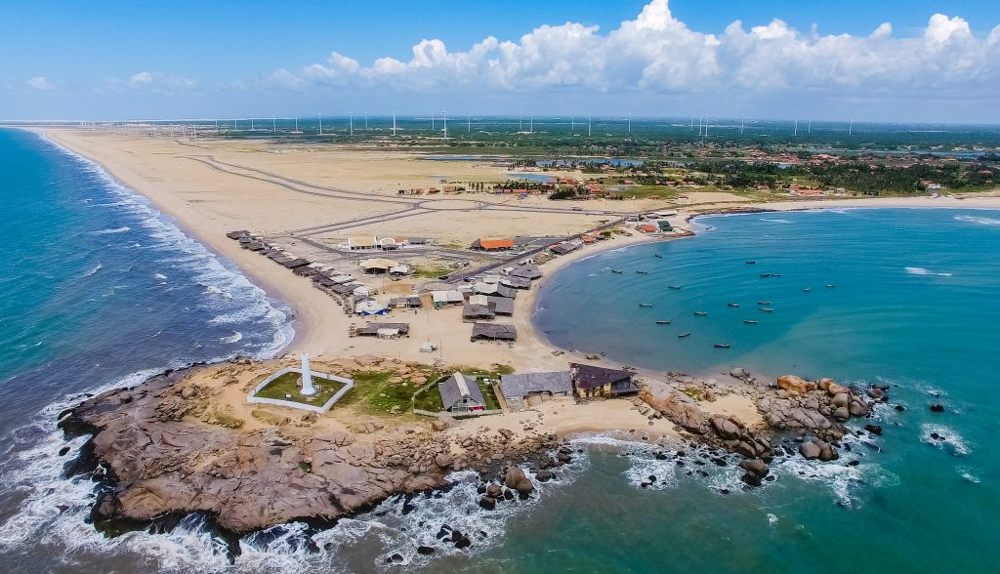

Seja bem vindo ao estado do Piaui
O Piauí é um estado fascinante localizado na região Nordeste do Brasil, conhecido por sua beleza natural, cultura rica e história interessante. A capital, Teresina, é uma cidade vibrante, cheia de vida, com um clima quente e uma forte tradição cultural. Uma das maiores atrações do Piauí é o Parque Nacional de Sete Cidades, que possui formações rochosas impressionantes e uma paisagem única, ideal para quem gosta de natureza e aventura. O estado também é famoso pelo Delta do Parnaíba, uma das maiores áreas de manguezais do Brasil, onde é possível fazer passeios de barco e apreciar a fauna e flora locais, incluindo jacarés, aves e peixes. Além disso, o Piauí possui praias deslumbrantes, como a Praia de Atalaia, em Luís Correia, que oferece águas cristalinas e areias brancas, perfeita para relaxar e curtir o mar. A cultura piauiense é marcada por manifestações tradicionais como o forró, o bumba-meu-boi e festas populares que celebram a história e as raízes locais. A culinária também é deliciosa, com pratos típicos como a carne de sol, a galinha caipira, o arroz de cuxá e o bolo de rolo, que é uma especialidade regional. O Piauí é um estado cheio de belezas naturais, cultura e história, com um povo acolhedor e alegre. Se quiser saber mais alguma coisa, estou aqui para ajudar!

voltar